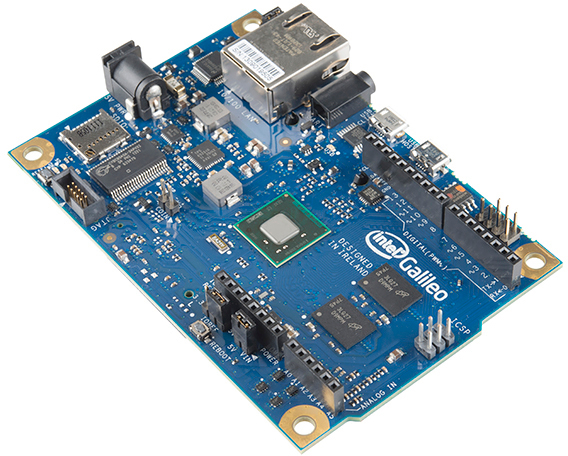
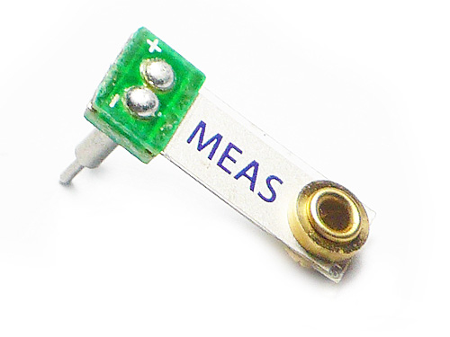

Deteksi Gempa Bumi Menggunakan Mikrokontroller
Aplikasi Intel Galileo Untuk Kebencanaan
Apa Itu Mikrokontroller?
Mikrokontroler adalah sebuah sistem komputer fungsional berukuran kecil dalam sebuah chip. Di dalamnya terkandung sebuah prosesor, memori (sejumlah kecil RAM, memori program, atau keduanya), dan perlengkapan untuk melakukan input output serta dapat diprogram untuk melakukan tujuan tertentu.
Mikrokontroller biasa digunakan untuk melakukan suatu pekerjaan secara otomatis, misalkan sistem kontrol produksi mesin, peralatan medis menggunakan robot, remote control, hingga berbagai embedded system. Dibandingkan produk-produk yang menggunakan microprosessor, memory dan devices input/output secara terpisah, microcontroller jauh lebih mudah dan murah untuk digunakan.
Beberapa mikrokontroller menggunakan 4-bit words dan beroperasi pada clock rate dengan frekuensi 4kHz untuk meminimalisir penggunaan energi. Alat ini mampu mempertahankan fungsinya saat waiting sebuah input seperti perubahan tegangan listrik, tombol yang ditekan atau interrupt lain. Konsumsi energi ketika sleeping mode hanya pada hitungan nanowatt, hal ini membuat mikrokontroller cocok untuk penggunaan yang cukup lama.
Intel Galileo
Intel Galileo adalah sebuah Single Board Processor (Mikrokontroller) buatan Intel. Intel Galileo sendiri menggunakan processor Quark SoC X1000 yang berbasis x86 low power System On Chip (SoC). Quark SoC X1000 adalah prosessor jenis baru yang dikembangkan Intel yang didesain khusus untuk perangkat Internet Of Things (IoT devices). Processor yang digunakan pada board Intel Galileo merupakan jenis prosessor 32bit dan memiliki kecepatan 400MHz. Selain itu Mikrokontroller ini juga dilengkapi dengan internal SRAM berkapasitas 512KB. Intel Galileo juga dilengkapi dengan banyak peripheral lainnya yang dapat digunakan untuk mendukung pembuatan projetct Internet Of Things.
Beberapa peripheral yang terdapat pada Intel Galileo adalah sebagai berikut ini :
- 8MB Flash memori yang dapat digunakan untuk menyimpan firmware
- 11KB EEPROM memori yang dapat digunakan untuk menyimpan data permanen layaknya sebuah hardisk/flashdisk
- Micro SD socket yang bisa digunakan untuk memasang micro SD dengan kapasitas maksimal 32GB. Mico SD dapat digunakan sebagai lokasi penginstalan sistem operasi untuk Intel Galileo (Linux atau Windows)
- 10/100MB Ethernet port yang bisa digunakan untuk mengkoneksikan Intel Galileo dengan jaringan lokal ataupun jaringan internet.
- USB 2.0 host dan device ports dapat digunakan untuk menghubungkan SBC dengan perangkat USB seperti USB Webcam, USB Keyboard, USB mouse dan lain sebagainya.
- RS232 Port sebagai salah satu jalur komunikasi data serial dengan sensor ataupun perangkat lainnya.
- mini PCI Express yang dapat ditambahkan dengan device PCI lainnya contohnya WLAN Card sehingga Intel Galileo dapat berkomunikasi melalui jaringan wireless.
- Arduino standard pinout yang merupakan input output analog/digital yang memiliki konfigurasi sama dengan board arduino. Input dan output ini dapat digunakan untuk menghubungkan SBC dengan shield arduino ataupun dengan sensor analog/digital. 
Deteksi Getaran Menggunakan Mikrokontroller
Salah satu yang paling penting untuk mendeteksi gempa yaitu mendeteksi getaran. Karena gempa bumi adalah getaran yang disebabkan oleh aktivitas tektonik maupun vulkanik di dalam bumi. Untuk mendeteksi getaran tersebut, perangkat Mikrokontroller dalam hal ini Intel Galileo saja tidak cukup.
Dalam merancang sebuah perangkat Internet Of Thing dikenal modul, modul adalah sekelompok perangkat keras yang memiliki tujuan tertentu, modul ini dapat dipasangkan pada mikrokontroller untuk kemudian diprogram sesuai keinginan desainer perangkat Internet of Thing tersebut.
Untuk mendetekasi getaran dibutuhkan modul yang mengandung sensor untuk mendeteksi getaran. Salah satu yang bisa digunakan yaitu sensor Piezo electric. Sensor ini dapat menangkap getaran melalui piezo vibra-tab yang merupakan komponen Piezo electric.
Frekuensi gempa bumi adalah antara 1 - 20 Hz, untuk menghindari resonansi bahkan dengan berat terberat yang diletakkan pada sensor ini frekuensi resonansinya berada pada kisaran kHz.
Jadi untuk mengurangi frekuensi resonansi dan mendapatkan beberapa sinyal yang berguna, dapat dilakukan dengan menggetarkan tempat dimana alat ini diletakkan. Saya menggunakan Oscilloscope dengan FFT dan mengubah berat di ujung film ini sampai frekuensi sekitar 40Hz yang terbesar. Jika Anda tidak memiliki sebuah osiloskop, hanya menambahkan sedikit berat dan kemudian memukul sensor. Ini harus flop sekitar selama sekitar setengah detik ke detik sebelum datang untuk beristirahat.
Setelah Anda memiliki sensor disetel ke frekuensi yang tepat, menempatkannya di papan tempat memotong roti Anda di salah satu ujung, Anda akan membutuhkan ruang untuk sisa sirkuit.
Seperti yang Anda lihat dari gambar, alat ini harus ditempel ke bawah dasar sensor. Hal ini karena mengarah pada film piezo datar, dan cenderung longgar dalam papan tempat memotong roti, sehingga setiap getaran cenderung tersesat dalam pergerakan lead. Merekam sehingga dasar tidak bisa bergerak akan memastikan bahwa data Anda akurat!
Apa Itu Mikrokontroller?
Pendeteksi geteran sebelumnya masih memungkinkan banyak terjadi kesalahan, misalnya ketika alat pendeteksi geteran tersebut ditaruh diatas meja, tentu ketika meja tersebut bergetar akan menyebabkan benda tersebut mendeteksi terjadi gempa. Jikapun alat pendeteksi ini diletakkan di tanah, tentu kita sering merasakan misalnya ada truk berisi muatan maksimum lewat di jalan akan menyebabkan permukaan tanah seperti bergetar dan menyebabkan kesalahan pendeteksian pada alat ini.
Oleh karena itu untuk mendeteksi gempa dalam dunia nyata dibutuhkan paling tidak minimal tiga buah peralatan seperti ini yang diletakkan secara berjauhan kemudian ketiga alat ini dihubungkan ke internet. Sebaiknya alat diletakkan pada jarak 1 - 10 km sebab jika terlalu dekat akan memperbesar kemungkinan penafsiran getaran lokal menjadi gempa namun jika diletakkan terlalu jauh membuat gempa tidak terdeteksi karena terkadang wilayah yang merasakan gempa tidak terlalu luas.
Untuk memvalidasi apakah getaran terjadi merupakan getaran gempa atau getaran lokal, dapat dilakukan dengan memvalidasi apakah seluruh alat yang diletakkan berjauhan disini bergetar disebabkan gempa atau bukan. Jika seluruh alat yang dipasang bergetar secara bersamaan maka getaran tersebub disebabkan oleh gempa bumi, maka jika tidak ketiganya bergetar sekaligus, berarti gempa tersebut hanya disebabkan getaran lokal.